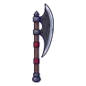
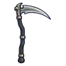
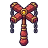
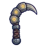
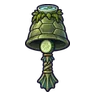
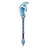

หอบัญชีใต้วิหาร ชั้น 1
ดูบนแผนที่และวิธีไป วางแผนฟาร์ม
ดันเจี้ยนในเมืองหอระฆัง · Lv 78–83
ชั้นล่าง / ดันเจี้ยน
มอนในแมพ (5)
| มอน | Lv | ธาตุ | โซน |
|---|---|---|---|
| 78–83 | วิญญาณ | ||
| หยดหมึกแตกตัว | 78–81 | น้ำ | |
| 78–81 | ลม | ||
| ตู้เอกสารโล่ | 80–83 | ดิน | |
| 80–83 | มืด |
อุปกรณ์ที่ดรอปในแมพนี้
| ของ | โอกาสสูงสุด |
|---|---|
 ขวานยักษ์ใบยาว | 0.25% |
| 0.25% | |
| 0.25% | |
| 0.25% | |
| 0.25% | |
 เคียวใหญ่เหล็กดำ | 0.25% |
| 0.25% | |
| 0.25% | |
| 0.25% | |
| 0.25% | |
 ไม้เชิดหุ่นโซ่โกเลม | 0.25% |
 เคียวคู่นิ้วโกเลม | 0.25% |
 กระดิ่งวิญญาณกัปปะ | 0.12% |
| 0.12% | |
 หอกยาวคลื่นยักษ์ | 0.12% |